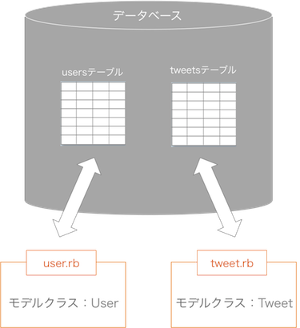
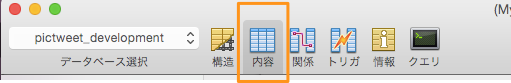

- 終了まであと10日
 大宅 誠人
大宅 誠人
大宅 誠人データベースとのやりとりの仕組みについて理解し、モデルを使ってデータベースに保存されたデータの呼び出し、データベースへのデータの保存が出来るようにしましょう
・モデル
・テーブル
・レコード
・カラム
・migration
・ActiveRecord
・コンソール
・SQL
前章ではルーティング、コントローラー、ビューの流れの処理について学習しました。ただし、これだけでは何度アクセスしても同じ内容になる静的なサイトしか作成できません。アクセスのたびに内容が変わるような動的なサイトを作るにはデータベースにデータを保存するために必要な「テーブル」と、テーブルからデータを取得するために必要な「モデル」について学習する必要があります。
テーブルとは、表形式の収納場所です。0章にて、データベースとは様々な情報を保存しておく場所だということを学びました。ツイッターを例にとると、ツイートやユーザーの情報がデータベースに存在するテーブルに整理して保存されています。
テーブルの横1行のことをレコード、縦の列をカラムと言います。１列目に項目名を入れたエクセルのようなイメージです。
通常、一つのデータベースの中に複数のテーブルがあり、この中にデータが保存されていきます。つまり、データベースがあっても、テーブルがなければデータを保存できません。
モデルは、データベースへのアクセスをはじめとする情報のやりとりに関する処理を担当しているパートです。最初から概念だけで理解するのは難しいので、実際に使いながら慣れて行きましょう。
2章でルーティング→コントローラ-→ビューの順で処理が進みページが表示されることを学びました。ビューでデータベースに保存されているデータを表示するためには、コントローラーでモデルを利用してテーブルからデータを引き出し、ビューに渡します。
基本的に、モデルはapp/models以下の階層に設置されます。
1 2 3 4 5 6 |
class Sample
def test
end
end
|
Sampleというクラスが書かれていることがわかります。モデルを担当するクラスのことをモデルクラスと言います。例の場合は、Sampleというクラスがモデルクラスになります。
Railsでは、ファイルやテーブルなどの命名を規則に従った形にする必要があります。モデルとテーブルに関する命名規則は以下のようになっており、これに従えばテーブルとモデルが結びつきます。
| 種類 | 概要 | 名前例 |
|---|---|---|
| モデルクラス名 | 先頭は大文字、単数形 | Tweet |
| モデルクラスのファイル名 | 先頭は小文字、単数形 | tweet.rb |
| テーブル名 | 先頭は小文字、複数形 | tweets |

Tweetクラスがtweetsテーブルを操作でき、モデルクラスが入ったファイル名はtweet.rbとなります。
rails g modelコマンドを使用すると、モデルファイルと関連ファイルを自動で作成することができます。実際に使用する際には「rails g model モデルクラス名(全て小文字)」というように作成したいモデルのクラス名を全て小文字にしたものを後ろに付けて実行します。
1 2 |
$ rails g model モデルクラス名(全て小文字)
# モデルを作成
|
※ rails g modelのgとは「generate」を省略したものです。以前に使用した「rails g controllerコマンド」と同様です。
1 2 3 4 5 |
$ pwd
# 現在のディレクトリが「users/ユーザー名/projects/pictweet」であることを確認
$ rails g model tweet
# tweetモデルを作成
|
正しく作成できれば以下の様な出力結果が表示されます。
1 2 3 4 5 6 |
invoke active_record
create db/migrate/20141011073059_create_tweets.rb
create app/models/tweet.rb
invoke test_unit
create test/models/tweet_test.rb
create test/fixtures/tweets.yml
|
コマンドを正しく実行出来ると、出力結果が表示されます。この出力結果の３行目に注目してください。
1 |
create app/models/tweet.rb
|
と書いてあります。これはcreate以下のファイルを新しく作成したことを意味しています。作成されたファイルはapp/models/tweet.rbとなっているので、app/modelsというディレクトリにtweet.rbというモデルファイルが作成されたことを意味しています。
さきほどコマンドを実行する際に、rails g modelのあとにtweetと付けて実行したことを思い出してください。このtweetはモデル名を表しているので、その結果tweet.rbというモデルファイルが作成されました。
先ほど、モデルを作成する際に「rails g model」コマンドを使用して作成を行ないました。この時にモデル名を間違えて作成してしまった場合、「rails d model」コマンドを使用してモデルファイルを削除することが出来ます。
1 2 |
$ rails d model モデル名
# 作成したモデルを削除
|
※ ちなみに、rails d modelのdとは「destroy」を省略したものです。以前に使用した「rails d controllerコマンド」と同様です。
「rails d model」コマンドを使用する際には間違えて作成したモデル名を後につけて「rails d model」コマンドを実行します。このコマンドで削除を実行すると、モデルを作成した際に自動的に作られた関連ファイルも同時に削除されるので非常に便利です。
マイグレーションファイルは、テーブルの設計図です。マイグレーションファイルにどんなカラムを持つテーブルにするかを書き込み、実行することでテーブルが作成されます。
このマイグレーションファイルは以前に「rails g model」コマンドを実行した際に作成されています。出力結果の２行目に注目してください。
1 |
create db/migrate/20141011073059_create_tweets.rb
|
create以下が作成されたファイルを示すので、db/migrateというディレクトリにマイグレーションファイルが作成されたことがわかります。
以下がマイグレーションファイルの中身の例です。changeというメソッドで、作成するカラムを指定することができます。
1 2 3 4 5 6 7 8 |
class Createテーブル名 < ActiveRecord::Migration
def change
create_table :テーブル名 do |t|
t.timestamps
end
end
end
|
カラム名を指定するとともに、そこにどんなデータが入るのかを示す「型」も指定する必要があります。以下に主な型の種類を紹介しておきます。
| 型 | 説明 | 用例 |
|---|---|---|
| :integer | 数字 | ユーザーのidなど |
| :string | 文字(少なめ) | ユーザー名、パスワードなど |
| :text | 文字(多め) | 投稿文など |
| :boolean | 真か偽か | 真偽フラグ |
| :timestamp | 日付と時刻 | 作成日時、更新日時など |
それでは実際に、マイグレーションファイルを編集しましょう。先ほどのrails g model コマンドですでにマイグレーションファイルが作成されています。
マイグレーションファイルはdb/migrateというディレクトリの中にあるファイルのことです。ファイルは１つだけしか存在していないはずなので、そのファイルを編集しましょう。
1 2 3 4 5 6 7 8 9 10 |
class CreateTweets < ActiveRecord::Migration
def change
create_table :tweets do |t|
t.string :name
t.text :text
t.text :image
t.timestamps
end
end
end
|
作成するカラムとその型を、changeというメソッドの中で指定します。
t.に続くのが「型」で、:に続くのがカラム名です。
t.timestampsは時間に関係するカラムを生成してくれるのでそのままにしておきましょう。
t.timestampsの後ろに null: false と書かれている場合は、null: falseを削除してください。
railsの最新バージョンではデフォルトでt.timestampsの後ろにnull: falseが記載される仕様となっています。
null: falseが記載されたままだと、本カリキュラム上で後に登場する「データベースに直接データを書き込む作業」ができなくなってしまうので削除しましょう。
さて、マイグレーションファイルはテーブルの設計図を表しているのでした。実際にその設計図に従ってテーブルを操作するにはrake db:migrateコマンドを使用します。
1 2 |
$ rake db:migrate
# マイグレーションファイルの実行
|
マイグレーションファイルの編集ができたら、マイグレーションファイルを実行します。
1 2 3 4 5 |
$ pwd
# 現在のディレクトリが「users/ユーザー名/projects/pictweet」であることを確認
$ rake db:migrate
# マイグレーションファイルの実行(tweetsテーブルの作成)
|
コマンドを正しく実行出来ると、出力結果が表示されます。
1 2 3 4 |
== 20141016074753 CreateTweets: migrating ==============================
-- create_table(:tweets)
-> 0.0315s
== 20141016074753 CreateTweets: migrated (0.0317s) =====================
|
スキーマファイルは「rake db:migrate」を実行した際に更新が行われ、最新のマイグレーションファイルのバージョンが記録されます。先ほどの作業でtweetsテーブルを作成するためにマイグレーションを実行しました。つまり、スキーマファイルにはtweetsテーブルを作成する際に編集したマイグレーションファイルのバージョンが記録されていることになります。
ファイル名の「20141025120015」の部分がマイグレーションファイルのバージョンを示しています。
14 15 16 17 18 19 20 21 22 23 24 |
ActiveRecord::Schema.define(version: 20141025120015) do
create_table "tweets", force: :cascade do |t|
t.string "name"
t.text "image"
t.text "text"
t.datetime "created_at"
t.datetime "updated_at"
end
end
|
14行目の部分に注目してください。version:のあとに20141025120015とあります。これが現在の最新のマイグレーションファイルのバージョンを示しています。今回はtweetsテーブルを作成するマイグレーションファイルの実行が最後のマイグレーションなので、このバージョンが一致しています。
schema_migrationsとはデータベースの変更履歴のようなもので、どのマイグレーションファイルまでが実行されているかが記録されていくテーブルです。マイグレーションファイルが実行された際に自動的に作成されます。
schema_migrationsを確認するために、Sequel Proを利用します。
実行し終わったマイグレーションファイルを、実行し終わったからといって削除すると、schema_migrationsと齟齬が生じ、下で紹介するrake db:rollbackを実行する時などに問題が生じる恐れがあります。そのため、マイグレーションファイルは消してはいけません。
Sequel Proは、テーブルを見やすく表示してくれるアプリケーションです。データベースに接続し、見たいテーブルを選択するとエクセルのような形式で表示してくれます。
「localhost」は左側のお気に入りリストの中にあります。このお気に入りは１章でデータベースの作成をする際に作成しました。
すると、以下のように左側に表示されるテーブル一覧に「tweets」と「schema_migrations」が表示されているはずです。

先ほど実行したマイグレーションファイルの名前の数字の部分がレコードとして記録されていることがわかります。
rake db:migrateコマンドを実行すると、まずschema_migrationsを参照し、実行されていないmigrationファイルがあるかどうか調べ、あればそれを実行します。
そのため、rake db:migrateを複数回実行しても、同じmigrationファイルが再度実行されることはありません。また、一度実行されたmigrationファイルの中身を変更してもそれは実行されません。
rake db:migrateコマンドを実行した際、読み込んだmigrationファイルの記述が間違っていて、意図しない名前や型を持つテーブルができてしまうことがあります。そのような場合は、rake db:rollback コマンドを利用します。
誤った名前のカラムを追加してしまった時は、実行したマイグレーションファイルを書き換えて再度 rake db:migrateすれば良いと思うかもしれません。しかし、その方法では正しいカラムを作り直すことはできません。
なぜなら、railsではマイグレーションを一度実行してしまうと、そのマイグレーションを編集して再度マイグレーションを実行することが出来ないからです。
これから先新たなテーブルを作成したり、カラムの追加などテーブルに変更を加える際は常にmigrationファイルを作成します。rake db:rollbackコマンドを実行すると、データベースの状態が最新のmigrationファイルを実行する前に戻ります。
では、実際にrake db:rollbackコマンドを試してみましょう。
1 2 3 4 5 |
$ pwd
# 現在のディレクトリが「users/ユーザー名/projects/pictweet」であることを確認
$ rake db:rollback
# データベースの状態を最新のマイグレーションファイルの実行前に戻す
|
成功すれば、続いてターミナルに以下のように表示されます。
1 2 3 4 |
== 20150108030707 CreateTweets: reverting =====================================
-- drop_table(:tweets)
-> 0.0260s
== 20150108030707 CreateTweets: reverted (0.0293s) ============================
|
先ほど作成したのはtweetsテーブルを作成するマイグレーションファイルでした。なので、rollbackした場合はtweetsテーブルが消えるはずです。
もう一度Sequel Proを起動し確認してみましょう。
tweetsテーブルが消えているのが確認できます。
左上の「データベースを選択」から、「pictweet_development」を選択します。
tweetsテーブルが消えていることがわかります。
また、「schema_migrations」テーブルを確認すると、先ほどの記録が消えて何もレコードが無い状態になっています。このように、rake db:rollbackコマンドを実行すると最後に行われたマイグレーションファイルの実行が無かったことになりますが、migrationファイル自体は残ります。なので、もう一度rake db:migrateコマンドを実行すれば再びtweetsテーブルが作成されます。
1 2 3 4 5 |
$ pwd
# 現在のディレクトリが「users/ユーザー名/projects/pictweet」であることを確認
$ rake db:migrate
# マイグレーションファイルの読み込み(tweetsテーブルを作成する)
|
続いてターミナルに以下のように表示されれば成功です。
1 2 3 4 |
== 20141016074753 CreateTweets: migrating ==============================
-- create_table(:tweets)
-> 0.0315s
== 20141016074753 CreateTweets: migrated (0.0317s) =====================
|
テーブルからデータを引き出す、という操作を体験するために、tweetsテーブルにレコードを作成してみましょう。
「localhost」は左側のお気に入りリストの中にあります。このお気に入りは１章でデータベースの作成をする際に作成しました。
接続に成功すると、以下のような画面が表示されます。
上部に「id」「text」「created_at」・・・と続いているのがカラムです。カラムのうち「id」はレコードの番号で、自動で作成されます。「created_at」「updated_at」は、マイグレーションファイルのt.timestampsという記述によって作成されています。
一番下の「＋」ボタンを押すと空のレコードが作成されます。編集したいレコードのカラムをダブルクリックすると以下の入力画面が表示されるので、「name」「text」のカラムを編集してみましょう。
以下のようにレコードが３つ作れていれば完成です。
railsでは、コンソールというものからアプリケーションのメソッドやアクションを実行することができます。
モデルとテーブルが正常に動作するか確かめるために、先ほど作成したレコードを呼び出してみましょう。
rails c とは「rails console」(コンソール)の略です。コンソールを実行すると作成したRailsアプリケーションのメソッドやクラスなどを実際に呼び出すことができます。ターミナルから「rails c」コマンドを実行することでコンソールを起動できます。
1 2 3 4 |
$ rails c
# コンソールの起動
[1] pry(main)>
|
コンソールを起動するとpryと表示され、この横にメソッドなどを書いていくことができます。コンソールを終了するには、コンソール上で「exit」と入力しエンターキーを押します。
1 2 3 |
[1] pry(main)> exit
# exitと書きエンターキーで実行(ターミナルに戻る)
$
|
慣れないうちは、ターミナルで実行すべきコマンドをコンソールで実行してしまいエラーが出る、ということが良くあります。自分が実行するコマンドはターミナルで実行するものなのか、コンソールで実行するものなのかをよく確認しましょう。
ActiveRecordはRubyのGemの一種です。このGemはモデルとテーブルをつなぎ合わせることで、Railsからテーブルのレコードにアクセスできるようにします。ActiveRecordはRailsにデフォルトでインストールされています。実際に、この機能を利用する際にはActiveRecord::Baseというクラスを継承して使用します。クラスの継承に関しては、後ほど詳しく説明します。
1 2 |
class Tweet < ActiveRecord::Base
end
|
tweet.rbの１行目に< ActiveRecord::Baseと書いてあります。<マークはマーク以下のクラスを継承していることを示しているので、TweetクラスはActiveRecord::Baseを継承していることになります。Tweetクラスはモデルクラスですが、このクラスがデータベースにアクセスすることが出来るのはActiveRecord::Baseを継承しているからなのです。
あるクラスに定義されたメソッドを、別のクラスで利用出来るようにすることを継承と言います。
今回の例で考えてみましょう。以下の図を見てください。
ここでは 元となるクラスを親クラス、親クラスのメソッドを引き継ぎ新しく作成するクラスを子クラス とします。
allメソッドやnewメソッドは、ActiveRecord::Baseクラスのメソッドです。
現在ActiveRecord::Baseクラスを継承しているのは、Tweetクラスのみです。またTweetクラスにはまだメソッドが定義されていないので、現在Tweetクラスで用いる事が出来るのは継承しているActiveRecord::Baseクラスのメソッドだけです。
クラスの継承に関して分からなければ、Rubyの4章で復習しましょう。クラスの継承
では、実際にActiveRecord::Baseクラスのメソッドについて学んでいきましょう。
モデルのクラスはActiveRecord::Baseというクラスを継承しています。クラスを継承した場合、継承元のクラスで定義されているメソッドを利用することができます。このとき継承元であるActiveRecord::Baseで定義されているメソッドのことを「ActiveRecord::Baseメソッド」と言います。AciveRecord::Baseはデータベースにアクセスするためのクラスなので、そのメソッドもデータベースへのアクセスを行なうものになっています。
allメソッドはActiveRecord::Baseを継承したモデルと結びつくテーブルのレコードを全て取得します。
1 |
[1] pry(main)> Tweet.all
|
以下はコンソールからallを実行した場合の例です。ActiveRecord::Baseを継承しているTweetクラスのクラス・メソッドのように利用します。
また、コンソールからallを実行した場合下記の最後のように「:」と表示され次のコマンドが打てなくなる現象があります。
これはターミナルの表示領域がいっぱいになってしまうためで、「Q」 を押すと次のコマンドが打てるようになります。
1 2 3 4 5 6 7 8 9 10 11 |
[1] pry(main)> Tweet.all
Tweet Load (16.8ms) SELECT `tweets`.* FROM `tweets`
=> [#<;Tweet:0x007fad47a6b1b0 id: 1, text: "こんにちは！", created_at: nil, updated_at: nil, name: "ken", image: nil>;,
#<;Tweet:0x007fad42928050 id: 2, text: "また明日！", created_at: nil, updated_at: nil, name: "mami", image: nil>;,
#<;Tweet:0x007fad47a6bae8 id: 4, text: "おはよう！", created_at: nil, updated_at: nil, name: "takumi", image: nil>;,
#<;Tweet:0x007fad47a6ad28 id: 5, text: "プログラミング好き！", created_at: nil, updated_at: nil, name: "takumi", image: nil>;,
#<;Tweet:0x007fad47a6b688 id: 6, text: "Ruby！", created_at: nil, updated_at: nil, name: "takumi", image: nil>;,
#<;Tweet:0x007fad47a6a850 id: 7, text: "on！", created_at: nil, updated_at: nil, name: "takumi", image: nil>;,
#<;Tweet:0x007fad47a6a238 id: 8, text: "Rails！", created_at: nil, updated_at: nil, name: "takumi", image: nil>;,
#<;Tweet:0x007fad42928668 id: 9, text: "どうも！", created_at: nil, updated_at: nil, name: "takumi", image: nil>;,
:
|
これでTweetsテーブルの全てのレコードをターミナル上に表示することができました。それでは、ここで取得できたレコードが一つ一つがどのように表示されているか見ていきましょう。
1 |
#<Tweet:0x007fad47a6b1b0 id: 1, text: "こんにちは！", created_at: nil, updated_at: nil, name: "ken", image: nil>
|
idが1のTweetのレコードを見た時、その中にはidやtextなどのカラムの値が表示されています。これを見ることで、ActiveRecord::Baseに定義されたメソッドを利用して取得してきたそのレコードのカラムの値などを確認することができます。
ちなみにこの「#<Tweet:~」以降に続いている「0x007fad47a6b1b0」という番号は オブジェクトidと呼ばれるもので、mysqlサーバー内でそのレコードおよびインスタンスを識別するための名前のようなものだと思っておいてください。
newメソッドはクラスのインスタンスを生成するメソッドです。ActiveRecord::Baseを継承しているモデルクラスの場合、newメソッドを実行すると関連するテーブルのカラム名がキーになったハッシュのようなものが生成されます。これをモデルクラスのインスタンスと呼びます。インスタンスのそれぞれのキーに値を代入してsaveメソッドを実行するとテーブルに保存されます。
1 2 |
[1] pry(main)> tweet = Tweet.new(name: "takashi", text: "Nice to meet you!")
[2] pry(main)> tweet.save
|
以下はコンソールからレコードを保存した場合の例です。
保存されたレコードを見ると、生成されたインスタンスに引数として渡したハッシュのキーがカラム名、バリューがその値となっていることが確認できます。
createメソッドはレコードの作成を行なうことの出来るメソッドです。newメソッドとsaveメソッドを使用して行なった処理をcreateメソッドで一気に行なうことができるので、単にレコードを作成する場合にはこのメソッドを使用しましょう。下記の例１と例２は同様の作業を行なっています。
例１：
1 2 |
[1] pry(main)> tweet = Tweet.new(name: "takashi", text: "Nice to meet you!")
[2] pry(main)> tweet.save
|
例２：
1 |
[1] pry(main)> Tweet.create(name: "takashi", text: "Nice to meet you!")
|
SQLとは、データベースに対して保存されているデータを要求する時に使用する言語の形式です。
本来ならデータベースに対しては以下のようなSQL文を使ってデータを要求しなければなりませんが、railsではActiveRecordのおかげで簡単にデータを要求することができます。
例１：
1 |
SELECT `tweets`.* FROM `tweets`
|
例２：
1 |
[1] pry(main)> Tweet.all
|
上記の例１と２は同じ処理を行なっています。Railsでは例２のように記述するだけで、データベースにアクセスする際には自動的に例１のようなSQL文に変換されます。このように、ActiveRecordを使用するRailsではより直感的で短い記法でテーブルの情報を操作することができます。
1 2 3 4 5 |
$ pwd
# 現在のディレクトリが「users/ユーザー名/projects/pictweet」であることを確認
$ rails c
# コンソールの起動
|
そのままコンソールで「Tweet.all」とコマンドを打ってみましょう。Tweetはクラス名で、allはテーブルに保存されたデータを全て呼び出すというメソッドでした。コマンドを実行すると、呼び出されたデータは、ターミナル上に表示されます。
1 2 |
[1] pry(main)> Tweet.all
# tweetsデーブルの全てのレコードを取得する
|
以下のような出力結果が表示されれば、モデルとデータベースは正常に動作しています。
1 2 3 4 5 |
[1] pry(main)> Tweet.all
Tweet Load (0.6ms) SELECT `tweets`.* FROM `tweets` LIMIT 4
=> [#<;Tweet id: 1, text: "こんにちは！", created_at: nil, updated_at: nil, name: "ken", image: nil>;,
#<;Tweet id: 2, text: "また明日！", created_at: nil, updated_at: nil, name: "mami", image: nil>;,
#<;Tweet id: 3, text: "どうも！", created_at: nil, updated_at: nil, name: "takumi", image: nil>;]
|
2行目に注目してください。SELECT ~ と続いているのが先ほど学んだSQL文です。SQL文も、以下の手順で実際に利用してみましょう。
⑤の操作の後、以下のように表示されれば成功です。Tweet.allで取得したレコードと同じものが取得されたことが確認できます。
続いて、コンソールからレコードを作成してみます。コンソールからレコードを作成するにはcreateメソッドを使用します。
1 2 |
[2] pry(main)> Tweet.create(name: "takashi", text: "Nice to meet you!")
# 新しいレコードの作成
|
以下のように、tweetsテーブルに新しくレコードが追加されていればOKです。
ActiveRecordを利用して、あるテーブルのレコードの情報を更新してみましょう。
以下はその例になります。
まずは、テーブルからレコードを一つ取り出し、変数tweetに代入します。
今回はfindメソッドを使用します。
findメソッドは引数に指定したidにあたる作品情報を1件だけ取得します。 もし、そのidにあたる作品が存在しない場合、エラーが発生します。
1 2 3 |
pry(main)> tweet = Tweet.find(1)
=><Tweet id:1, text:"こんにちは!", created_at:nil, updated_at:nil, name:"ken", image:nil >
# Tweetsテーブルからidが1のレコードを取得し、tweetという変数に代入
|
この時、変数tweetにはActiveRecord::baseというクラスを継承したtweetクラスのインスタンスが代入されることになります。
ターミナルで表示されている=>以降を見ると、tweetsテーブルのカラムとそのレコードが保持しているそれぞれのカラムの値がハッシュ形式で表示されていることがわかります。
さらに、以下の例のようにすることで、このtweetの持つカラムの値を更新することができます。
1 2 3 |
tweet = Tweet.find(1) #ツイートテーブルからidカラムの値が1のレコードをインスタンスとして取得
tweet.name = "abe" #取ってきたレコードのnameというカラムを、"abe"という値に上書き
tweet.save #更新したレコードを再び保存
|
テーブルに保存されているレコードを更新するにはそのレコードをインスタンスとして取得し、カラムを指定して値を直接代入します。上書きするだけではレコードの値は更新されないので、上書きを保存するにはインスタンスのsaveメソッドを使います。
1 2 |
インスタンス.カラム名 = 上書きしたい値 # 指定したカラムに値を代入
インスタンス.save # 更新した情報を保存する
|
idが1のユーザーのnameを"Shinbo"から"Abe"に更新する
1 2 3 4 5 6 7 |
user = User.find(1) # Usersテーブルのidが1のレコードを取得
p user.name
=> "Shinbo" # nameカラムの値は"Shinbo"
user.name = "Abe" # nameカラムの値を"Abe"に上書き
user.save # 変更をデータベースに反映
p user.name
=> "Abe" # nameカラムの値が"Abe"に更新された
|
saveメソッドを呼び出すまではインスタンスの値が更新されてはいますが、データベース上には保存されていない状態です。データベースに更新を反映させるときはsaveメソッドを使うことを忘れないようにしましょう。
以上の例にならい、実際にレコードを更新しましょう。
①コンソールを起動する
ターミナルからrails cコマンドでコンソールを立ち上げましょう。
②tweetsテーブルからidが1のレコードを取得し、変数に代入する
コンソールで以下のように書き、実行しましょう。
1 2 3 |
pry(main)> tweet = Tweet.find(1)
=><#Tweet id:1, text:"どうも！", created_at:nil, updated_at:nil, name:"takumi", image:nil >
# Tweetsテーブルからidが1のレコードを取得し、tweetという変数に代入
|
③取得したレコードのtextカラムの中身を、「さようなら！」に更新する
コンソールで以下のように書き、実行しましょう。
1 2 |
pry(main)> tweet.text = "さようなら！"
#取ってきたレコードのtextカラムを、"さようなら"という値に上書き
|
④上書きしたレコードを再度保存する
コンソールで以下のように書き、実行しましょう。
1 2 |
pry(main)> tweet.save
#上書きしたレコードを再保存
|
以上で、tweetsテーブルにあるidが1のレコードのtextカラムを「さようなら！」に更新することができました。
最後に、もう一度レコードを取得し、正しく上書きできているか確認してみましょう。
1 2 3 |
pry(main)> tweet = Tweet.find(1)
=><#Tweet id:q, text:"さようなら！", created_at:nil, updated_at:nil, name:"takumi", image:nil >
#正しく上書きできているかを確認
|
textの値が"さようなら！"になっていることがわかります。
以上でこの章は全て終了ですが、ActiveRecordのメソッドについては今後もよく使うので、マスターしてもらいたいと思っています。
そこで、ActiveRecordのメソッドをまとめたドリルを用意してありますので、次の章に進む前にRailsドリル1をやることをオススメします。
お疲れ様でした！このカリキュラムの終わりに確認問題を解きましょう。
テストを受けた回数：1回
最高得点：100点
合否：合格